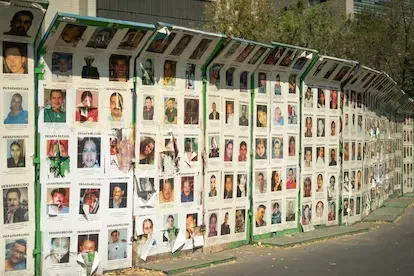

Equipo de campo
Guantes, botas, gorras, protector solar, palas y casas de campaña.
Donaciones, voluntariado y qué hacer si tienes un familiar desaparecido.
Los colectivos reciben ayuda en especie y en dinero. Antes de donar, contacta directamente al colectivo de tu estado y confirma qué necesita. No deposites a cuentas que no puedas verificar.
Guantes, botas, gorras, protector solar, palas y casas de campaña.
Agua embotellada, comida no perecedera y botiquín para las jornadas de búsqueda.
Gasolina, transporte y hospedaje para llegar a los puntos de búsqueda.
Escribe al colectivo de tu región y cuéntale qué puedes ofrecer. Respeta las indicaciones de las familias y no participes en búsquedas de campo sin que te inviten.
Escríbenos
Actúa lo antes posible. No necesitas esperar 72 horas para denunciar.
Consulta siempre los datos de contacto vigentes en los sitios oficiales. En caso de emergencia, llama al 911.
Coordina la búsqueda a nivel nacional. Sitio oficial
Recibe denuncias de su competencia. Sitio oficial
Acude a la fiscalía estatal y a la comisión local de búsqueda para iniciar el proceso.